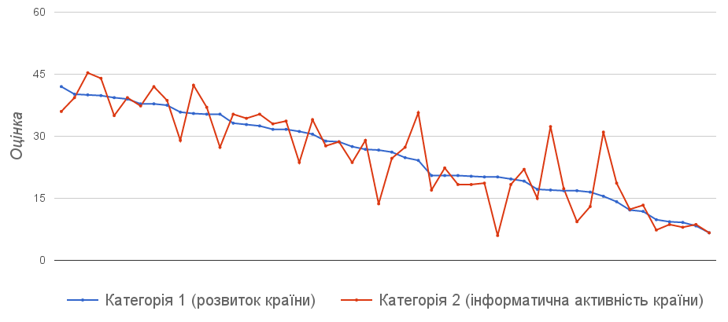

Важливість професійної та персональної інформатичної освіти
Досить великий відсоток людей по всьому світові не володіють інформаційно-комунікаційними технологіями на належному рівні або й зовсім тримаються від цього осторонь. Проте для того, щоб бути успішною і високорозвиненою, людина ХХІ століття повинна на високому рівні володіти знаннями, уміннями та навичками з інформатики. Сучасна людина має швидко шукати, збирати, аналізувати та передавати відомості, які актуальні для неї самої або ж для діяльності, якою вона займається. Метою цього дослідження є показати як рівень інформаційної грамотності впливає на добробут і розвиток людини у першій половині ХХІ століття та які можливості це їй надає.
Висновки дослідження ґрунтуються на безпосередніх спостереженнях та, значною мірою, на аналізі зібраних статистичних даних. Дані взяті за 2012-2015 роки із веб-ресурсів “Knoema”, “Scimago Journal & Country Rank”, “Quandl”, “Unicef”, “Central Intelligence Agency”, “Internet Live Stats”, а також із “Human Development Report 2015”. Похибка дослідження може мати місце через можливі неточні відомості, які розміщені в цих ресурсах.
Суть дослідження полягає в тому, щоб знайти закономірності у розвитку країни і ступенем її задіяності в інформатичному світі. Для порівняння були взяті перші 49 країн із найбільшим валовим внутрішнім продуктом та Україна за 2015 рік. А порівняння проводилося за двома категоріями, які містять такі параметри: категорія перша - ВВП, ВВП на душу населення, задоволення життям, досягнення в освіті, загальна кількість наукових робіт, рейтинг вбивств; категорія друга - кількість користувачів Інтернет, відсоток сервісів у ВВП, кількість наукових робіт в комп’ютерних науках.
Для уточнення результатів, по кожному з параметрів було виставлено для кожної країни оцінку від 1 до 50, в залежності від місця, на якому вона знаходиться у списку параметра. Наприклад, у списку “ВВП” Сполучені Штати Америки отримали оцінку 50, оскільки вони знаходяться на першому місці, а Україна - оцінку 1, бо знаходиться вкінці списку. Просумувавши оцінки в кожній категорії і знайшовши їх середнє значення, отримали загальні оцінки по країні для кожної категорії.
Графік порівняння
Аналізуючи графік, можна побачити, що існує закономірність. Звичайно, присутні певні виключення, які пов’язані із специфікою окремої країни, проте загальна тенденція очевидна.
Можна припустити, що рівень використання інформаційних технологій країною залежить від матеріального розвитку країни, її ВВП та інших чинників. Звичайно, тут має місце своя кореляція. Проте не можна не зважати на той факт, що інфомаційні технології сприяють піднесенню економіки та загального добробуту країни на вищий рівень. Адже чим більше країна процвітає, тим вищий рівень використання технологій у ній.
Значні відхилення у графіках оцінок можна пояснити тим, що у ВВП економік деяких країн переважає індустріальний або сільськогосподарський комплекс. Там же, де спостерігається перевага графіка оцінок Категорії 2, одночасно спостерігається і ріст в Категорії 1, хоч і мало помітний.
Якщо продовжити дослідження в ширину і глибину, то ці два графіки будуть максимально наближатися один до одного. Що й означатиме позитивний вплив інформатичної активності та грамотності на загальний розвиток країни.
Отже, дослідження показує, що чим вищий рівень інфоматичної самосвідомості у суспільстві країни, тим вищий її загальний розвиток. Відомості, наведені тут, мають послужити поштовхом до зверення великої уваги суспільства і кожної людини окремо до питання професійної і персональної освіти в сфері інформаційно-комунікаційних технологій та невідкладних дій у цьому напрямку. Адже гарні знання та вміння у тому, як працювати з відомостями, новинами та даними, значно підвищують освіченість і добробут кожної людини.